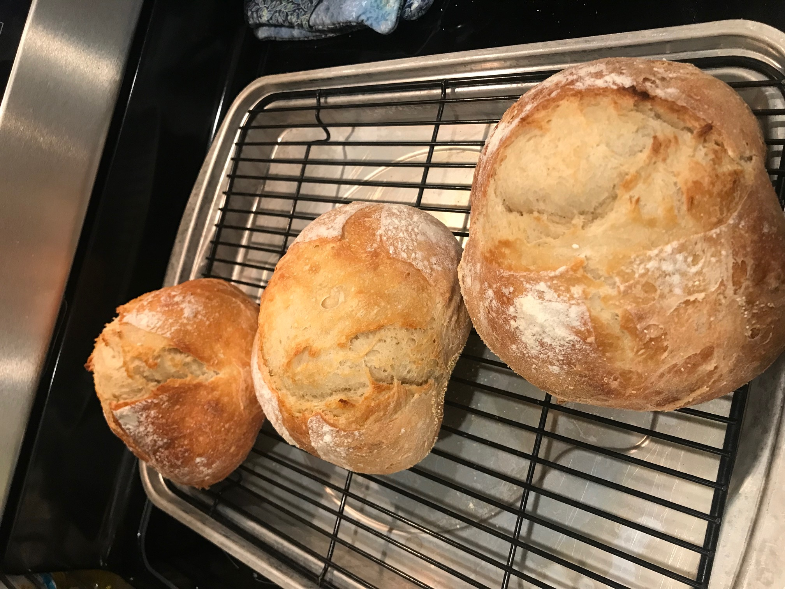

Artisan Bread

Description
This simple but delicious bread recipe can be made in just 5 minutes a day! When toasted and buttered, this pairs wonderfully with my Minestrone soup recipe. Credit to this recipe goes to "Artisan Bread in Five Minutes a Day" by Jeff Hertzberg and Zoe Francois.
Ingredients
- 1 & 1/2 Tablespoons yeast
- 1 & 1/2 Tablespoons salt
- 3 cups water
- 6 & 1/2 cups all-purpose flour, more for dusting dough
- Cornmeal
Note: You can replace about 1 to 1 & 1/2 cups white flour with any whole grain flour with great results.
Steps
- In a large bowl, mix yeast and salt into 3 cups warm water. Add flour and stir to combine completedly. Let dough rise in a warm place for at least 2 hours, until it rises and collapses (up to 5 hours - or even overnight won't hurt it). The dough may be baked at this point, or refrigerated for later use.
- Cover dough, but make sure it is not airtight - gases need to escape - and place in fridge. When you are ready to use it, throw a small fistful of flour on the surface and use a serrated knife to cut off a piece the size you desire. (The authors recommend a 1 pound loaf, which means cutting off grapefruit-sized pieces of dough.) Turning the dough in your hands, stretch the surface of the dough and tuck in under. The surface will be smooth, and the bottom will be bunched.
- Dust a pizza peel (or any flat surface, like a rimless cookie sheet) with cornmeal. This prevents sticking and adds a rustic crunch. You can use flour instead, but you'll need a very generous dusting. Allow dough to rest in a warm place for 40 minutes, or up to an hour and a half if you use some whole wheat flour in place of white, or if you make a larger loaf.
- Twenty minutes before baking, preheat oven to 450 degrees with baking stone (or overturned baking sheet) inside on the middle rack, plus a shallow pan on the top rack. Throw a small fistful of flour over the dough, slash it 2-4 times with a serrated knife (in a cross, a tic-tac-toe, or a fan), and slide it into the oven onto the baking stone. Throw 1-2 cups tap water into the shallow pan and quickly close the oven door to trap steam inside. Bake for 30 minutes, or until crust is well browned and bread sounds hollow when you knock on the bottom.
Return to Recipes